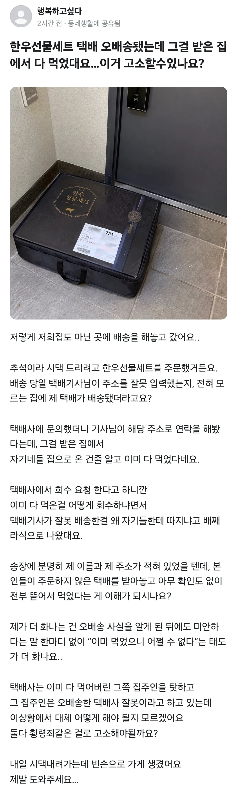

한우선물세트 오배송 대참사
댓글
진짜 스레드 아줌마 할줌마 아저씨 할저씨들 개극혐
현관문인데 안으로 열리면서 도어락 위치가 너무 낮음
호빗네집인가
예전에 내 택배인줄 알고 송장 안 보고 뜯었다 오배송이어서 지금은 만지기도 전이 우리집껀지부터 확인 함
1. 주소지를 잘못 배송함
기본적으로 택배기사 잘못
1-1 그렇다고 해서 집주인이 먹어도 되는건 아님
택배기사가 사고처리후 집주인에게 돈받아내야함
2. 주소지를 잘못 입력함
시킨사람 잘못
2-1 그렇다고 해서 집주인이 먹어도 되는건 아님
주문한 사람이 집주인에게 돈 받아야함
이지 않을까
에사크타!
구상권 청구하는 식으로 해결가능
택배회사가 받는 사람에게 먼저 보상하고
택배회사는 고기먹은쪽이랑 따로 해결하면 끝
택배사가 물어줌
먹은넘은 택배사가 고소
근데 사진이 도어락이 존나 낮게설치되어있네
난쟁이들 사는곳임?
AI주작같음
ㄹㅇ ai 관종주작사진이네
저건참고용 사진이겠지 애초에 오배송 된 사진을 어케 찍어
사진없으면 안넣어도 되는데 굳이 ai합성사진을 넣는게 꼬롬함
아니면 남의집에 배송한걸 기사가 찍어서 보내준거라고 ai 주작올린건가?
고의 입증이 힘들어서 혐의없음나옴처벌 불가능
오히려 명절선물을 더 칼같이 송장 확인하는데..
도어락 위치뭐냐 난쟁이전용 아파트임?
사진은 나중에 AI로 만든 걸수도 있지... 그것만보고 주작이라고 하기엔. 그리고 진짜로 이웃집에 오배송했는데 모르고 이웃집이 가져갔다면. 당연히 사진을 찍을 수가 없었겠지.
뭐 그럼 고지서 잘못가면 대신 내줄거임?
법적으로 저거 먹어도 되고 택배사가 책임 져야함 그리고 배송한 사람 조지겠지
추석때 선물 많이 들어오니 일일히 안보고 가지고 들어오니 헷갈릴수있고 놔두면 썩는거라 더욱 책임이 없긴해
ㅋㅋㅋㅋㅋ ㅅㅂ 드워프마을에서 찍었노
내친구도 오배송받았던데 ㅋㅋ
도어락이 왜 저기 달려있냐 AI네ㅋㅋ
보통 이런경우 고객은 판매처한테 보상 받고 판매처는 택배사랑 해결 봐야댐
포장은 뜯을순 있음
왜냐면 나도 그런적 있었는데 엔진오일 사서 택배 받았는데 하필 타이밍 좋게 옆옆동 같은 호 사람도 엔진오일을 주문했고 그게 나한테 왔던거임
엔진오일 메이커 달라서 다시 확인해보니 다른 사람 꺼라걸 알게됐고 그대로 간단히 포스트잇에 사정을 쓰고 두고 옴
그냥 소비했다는 건 고의성이 아주 다분함 모를리가 없어
ai